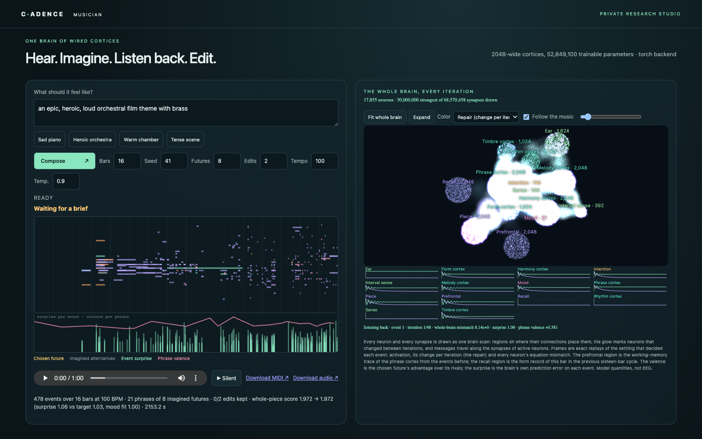

Hear. Imagine. Listen back. Edit.
The composer is one cadence brain of wired cortices. It hears music as a stream of note events, holds the phrase in working memory, remembers the form of the piece, takes a mood, imagines continuations through its own predictions, listens to the whole draft and edits its weakest passage. The studio shows every neuron and every settling iteration in sync with playback.
This example runs on your computer: the studio is a Python server and the brain is a pretrained model you download once. The page you are reading is its front door; the source, the trainers, the tests and the model data sheet are in the composer folder.

Run it on your computer
git clone https://github.com/muellerberndt/cadence-examples
cd cadence-examples/composer
python -m venv .venv && source .venv/bin/activate
pip install -r requirements.txt
python tools/fetch_model.py
python serve_musician.py --checkpoint checkpoints/maestro-1/brain.npzOpen http://127.0.0.1:8079. On Apple silicon add --backend torch --device mps; on a CUDA machine --backend torch --device cuda. Loading the model and laying out the brain takes a few minutes.
The model
| Name | maestro-1 |
| Brain | 17,855 neurons in 14 regions · 68,570,458 directed synapses · 52,849,100 trainable parameters |
| Learning | local free/nudged contrast on one joint equilibrium, no backpropagation graph; 38,000 updates of 256 parallel streams on one A10G |
| Corpus | 65,188 public-domain and CC0 pieces from PDMX, 46.8 million events, split by composition family |
| Held-out surprise | 1.023 per attribute; a GRU control trained on the same streams reaches 0.708 |
| Documents | Model data sheet · Design · README |
The training corpus is the public-domain and CC0 pool of PDMX. The composer is a research prototype: its held-out prediction is still behind a GRU control of a seventh of its size, and its mood input is a bounded keyword parser, not language understanding or a model of any composer's style.